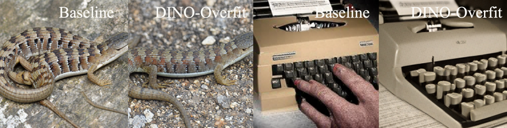
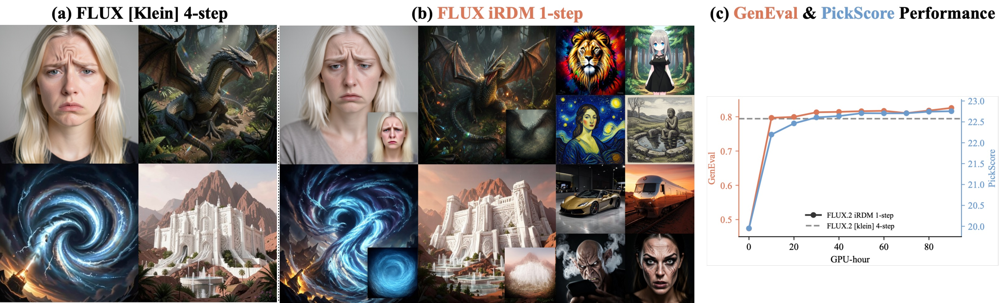
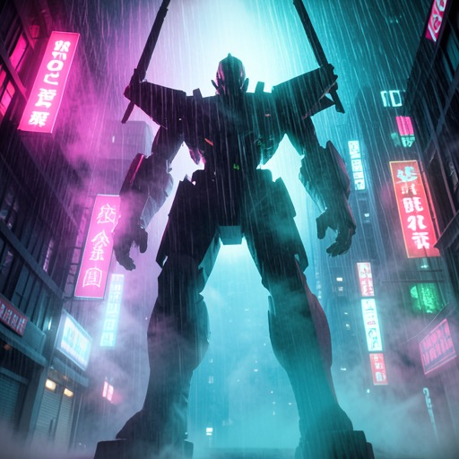
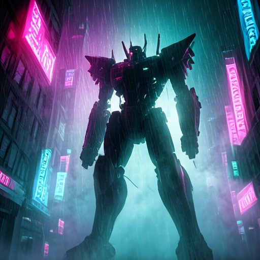
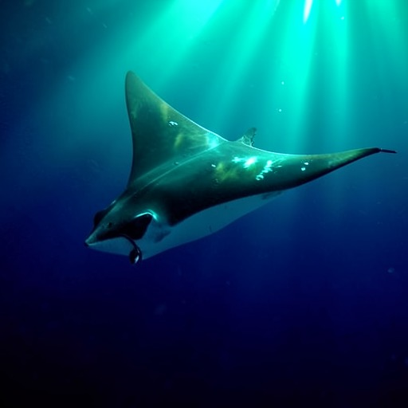
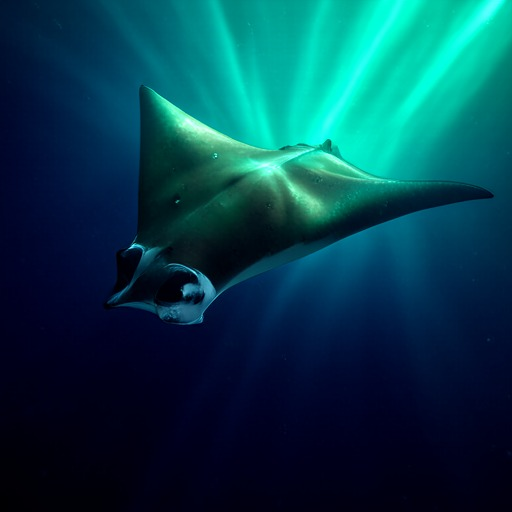

Representation Distribution Matching for One-Step Visual Generation
We train a one-step image generator by matching generated and real feature distributions
under frozen pretrained encoders. No online teacher, no adversary, no trajectory.
Estimate the distance right and refuse to trust any single encoder, and a single network
evaluation lands the closest to real reported to date.
Lan Feng1, Wuyang Li1, Éloi Zablocki2, Matthieu Cord2,3, Alexandre Alahi1
SWr14 distance to real, real validation data scores 1.00. One-step state of the art.
63.6%
of samples preferred over real photographs by PickScore, a learned human-preference model.
90h
H200 GPU-hours to post-train four-step FLUX.2 into a single step.
Each frame is one network evaluation · 1-step FLUX.2 after iRDM
One-step ImageNet · Distance to real
How close can a single step get?
Generative quality is a distance between distributions. We measure it with SW r14,
a Sliced-Wasserstein distance averaged over fourteen frozen encoders, scaled so a fresh draw of real
validation data scores 1.00. It shares no machinery with the training loss, so a low score
cannot be gamed by matching the objective. Lower is closer. iRDM sits nearest the real line,
below every released generator, including multi-step diffusion.
Model1.02.03.04.05.06.0SW r14
REAL · 1.00
iRDM · ours · 1-NFE
1.30
pMF-H FD-SIM · 1-NFE
2.05
REPA-E SiT-XL
2.40
RAE-XL
2.43
LightningDiT-XL
3.10
SiT-XL/2 + REPA
3.61
MAR-H
3.87
SiT-XL/2
4.27
Drifting-L · 1-NFE
5.93
And do humans agree
A preference model we never train against.
PickScore is a learned human-preference proxy, and our objective never optimizes it.
It prefers iRDM to every prior one-step generator, and for the first time to held-out
real photographs.
preferred over real photographs first one-step model to pass
63.6%
preferred over pMF-H FD-SIM the prior best one-step generator
71.2%
preferred over RAE-XL a recent multi-step model
75.7%
preferred over REPA-E SiT-XL a recent multi-step model
73.2%
The method
Two axes fix every instance.
Every teacher-free distribution-matching generator is set by two choices, and prior methods fixed
both at once. We vary one at a time. The first is how the distributions are compared. The second is
which representations they are compared in. Getting each right is what closes the gap.
Axis 01 · Comparison
How the distributions are compared
An exact within-batch repulsion, paired with a Nyström attraction to a reference frozen once over the full data.
MMDEstimated right.The classical MMD, once dismissed as too weak, becomes a strong objective with an exact within-batch repulsion and a Nyström attraction toward a frozen full-data reference.
BATCHLarge and fresh.The generated batch is the operative variable. Quality climbs to an optimum above 2048, an order past common practice, with gradient caching absorbing the memory.
JOINTMatch the joint, not the marginal.On conditional tasks we match the joint image-text law, so prompt fidelity becomes part of the objective.
Axis 02 · Representation
Which spaces they are compared in
Any single encoder can be gamed. A diverse battery, held in balance, cannot.
* four encoders held out from training, a generalization check
GAMEOne encoder is never enough.Matched alone, even DINOv2 is driven below the real score while samples stay visibly fake. The limitation is single-encoder matching itself, not the choice of encoder.
BALANCEA battery under constrained optimization.A proportional Lagrangian controller upweights whichever encoder is hardest to satisfy and drops those already at their floor, so no space can be gamed.

Single-encoder gaming. Matching only DINOv2 reaches the real floor, yet the lizard becomes photoreal while the typewriter keeps clear artifacts. A saturated single-encoder score does not imply realism.
Text-to-image post-training
Four-step FLUX.2, in a single step.
The same recipe carries to text-to-image. With the joint image-text objective, we post-train
the four-step FLUX.2 [klein] into a one-step model that surpasses the four-step teacher on both
GenEval and PickScore, in 90 H200 GPU-hours.

GenEval overall 1-step iRDM vs 4-step base
0.826vs0.794
PickScore 1-step iRDM vs 4-step base
22.76vs22.58
Joint vs marginal GenEval overall
0.826vs0.801
Compute single run
90hH200
Against a one-step DMD2 distillation of the same teacher, iRDM also leads: GenEval 0.826 vs 0.804, PickScore 22.76 vs 22.36.
Head to head
Our one step vs the four-step teacher.
Four-step FLUX.2 [klein] is the distillation target. We post-train it into a single step, then set
them side by side on the same epic and complex prompts. The four-step teacher averages a PickScore of
23.08; our one-step student holds that quality at a single forward pass, and on a number of prompts
scores higher.
Sci-fi worldsTowering mech silhouette in rainy neon city, magenta and cyan glow, volumetric fog, moody cinematic backlight.our 1-step · PS 24.26★

4-step · teacher

1-step · ours
Space & cosmosSwirling crimson nebula with a bright newborn star, volumetric glow, deep cosmic blacks, breathtaking scale.our 1-step · PS 23.89★
4-step · teacher1-step · ours
Mythical creaturesA blazing phoenix rising from glowing embers, fiery orange wings spread against a dark smoldering sky.our 1-step · PS 23.80★
4-step · teacher1-step · ours
UnderwaterGiant manta ray soaring through turquoise god rays, glowing surface above, deep indigo abyss, epic scale.our 1-step · PS 23.41★

4-step · teacher

1-step · ours
Vehicles in motionSteam train crossing a misty stone viaduct, billowing smoke, volumetric god rays, moody blue valley fog.our 1-step · PS 22.52
4-step · teacher1-step · ours
Epic fantasyA lone dragon glides over jagged misty peaks at dawn, golden god rays piercing the fog, vast silhouette.our 1-step · PS 22.64
Cherry-picked one-step samples from FLUX.2 [klein] after iRDM post-training. Each is a single
network evaluation, with no iterative refinement.
Citation
BibTeX
@misc{feng2026rdm,
title = {Representation Distribution Matching for One-Step Visual Generation},
author = {Feng, Lan and Li, Wuyang and Zablocki, {\'E}loi and Cord, Matthieu and Alahi, Alexandre},
year = {2026}
}